Матеріали Дентсплай Сірона · журнал «ДентАрт» 2018 №2
Біоміметична техніка реставрації передніх зубів CeramX One SphereTEC
BIOMIMETIC TECHNIQUE OF RESTORATION OF ANTERIOR TEETH WITH CERAMX ONE SPHERETEC
Ксенія Лазарєва,клініка-студія «Аполлонія» (м. Полтава, Україна)
Пряма композитна реставрація порожнини IV класу за Блеком, що утворилася в результаті травми, – часта клінічна реальність. Такі реставрації зазвичай виконуються в юному віці, і пацієнти тривалий час не хочуть переробляти пломби, які виконані давно, можливо, в короткі терміни, однак уже мають видимі дефекти, – через побоювання отримати недостатньо естетичний результат або вважаючи, що результат, який можливий і відповідає їхнім естетичним запитам, – лише виготовлення непрямих конструкцій – коронок чи вінірів. У цій статті подано клінічний приклад поліпшення естетики фронтального ансамблю у прямій техніці відновлення. Ідеологія такого підходу полягає в тому, щоб зберегти якомога більше зубних тканин, але при цьому досягти оптимальної естетики за допомогою простих методів, дотримуючись деяких основних принципів. Тут ми не тільки вирішили основну проблему заміни пломб, а й змогли врахувати побажання пацієнтки з приводу закриття «темних трикутників» і усунення невеликих поворотів коронок зубів, що поліпшило естетику усмішки загалом.
Клінічний приклад
Пацієнтка незадоволена естетикою усмішки: пломба на зубі 11, виконана в дитинстві через відкол унаслідок травми, була помітна і неестетична, також при погляді збоку ріжучий край і кут переднього зуба 21 стирчать, що помітно при розмові або усмішці, зміщена серединна лінія, і передні зуби мають різні пропорції. Особливо пацієнтка скаржилася на чутливість передніх зубів, яку пов'язувала зі стертістю емалі ріжучого краю, і на естетичний дискомфорт – наявність темних трикутників між передніми і бічними різцями.
У програмі Keynote було створено комп'ютерний демонстраційний шаблон для візуалізації планованої усмішки. Раніше пацієнтці неодноразово пропонували виготовити керамічні вініри, стверджуючи, що всі інші консервативні варіанти не відповідатимуть її естетичним вимогам. Такий варіант був відкинутий, тому що передбачав велику інвазивність препарування здорової емалі. Ми запропонували не міняти положення іклів та бічних зубів і максимально неінвазивно виконати невеликий поворот центрального різця, закрити дефекти у пришийковій зоні проксимальних поверхонь і замінити старі пломби.
Перший етап, який повинен виконати оператор, – визначити колір, прозорість і яскравість зубів для точного відтворення топографії тканин матеріалом правильної опаковості і відтінку.
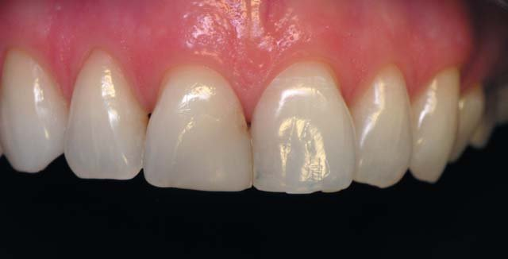
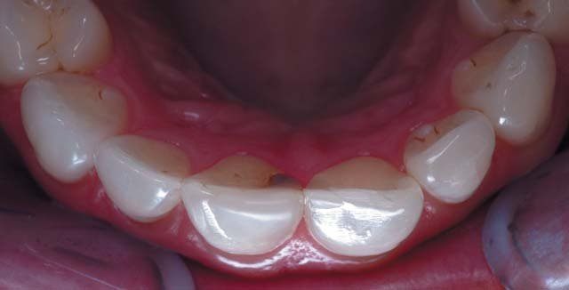
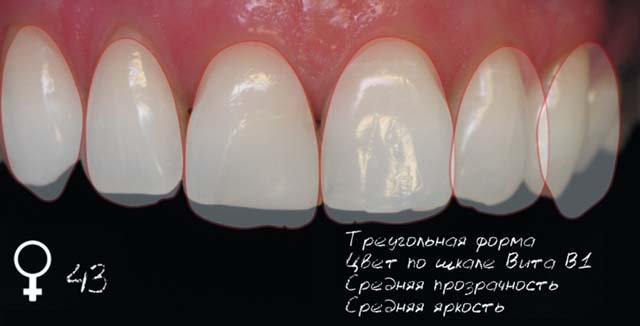
Виділяють три основні ступені прозорості/опаковості: високий, середній, низький. Прозорість/опаковість визначається обсягами дентину та емалі і може змінюватися з віком, як і яскравість, що зумовлена обсягом парапульпарного дентину коронки зуба. Найскладнішим з точки зору імітації є високий ступінь прозорості зуба.
Прозорість можна визначити за непрямими ознаками: чим вища прозорість, тим більше помітні внутрішні структури – мамелони гарно видно на просвіт, це добре визначається при перепаді освітленості. Також точніше визначити топографічні межі можна, оцінивши зуби на просвіт за допомогою ліхтарика, дзеркала, при фотореєстрації з контрастером. Надалі це допоможе правильному відтворенню внутрішніх контурів композитом різної опаковості і кольору.
Другий етап – визначення кольору зуба в цілому і відтінку кожної зубної тканини. Визначити колір можна різними способами. Класичний підхід – використовувати стандартну шкалу Vita. Стандартні шкали, які йдуть разом з матеріалом, мало інформативні, оскільки у багатошаровій конструкції відтінок матеріалу ніколи не буде власне відтінком реставрації. Визначати колір за допомогою шаблону потрібно без колірної підкладки (контрастера чи хустки рабердаму); без освітлення робочого поля операційним світильником, під безтіньовим світильником, наприклад D-TEC; у полі зору оператора не повинно бути яскравих кольорів, які можуть призвести до помилки сприйняття відтінку, також зуби не повинні бути зневоднені.
Ще один підхід – використання спектрофотометрії – це точніший метод, який дозволяє визначити колір в цілому або по зонах: шийка – тіло – ріжучий край.
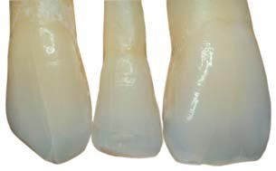
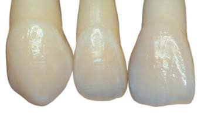
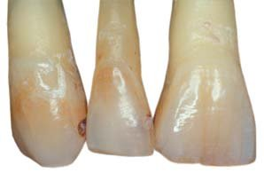
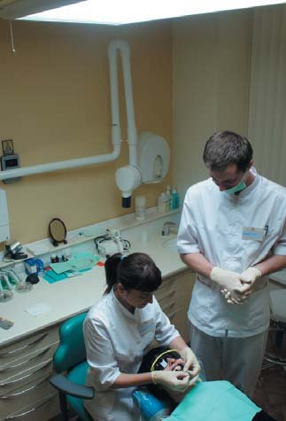
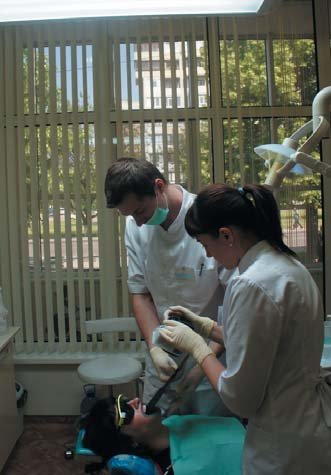
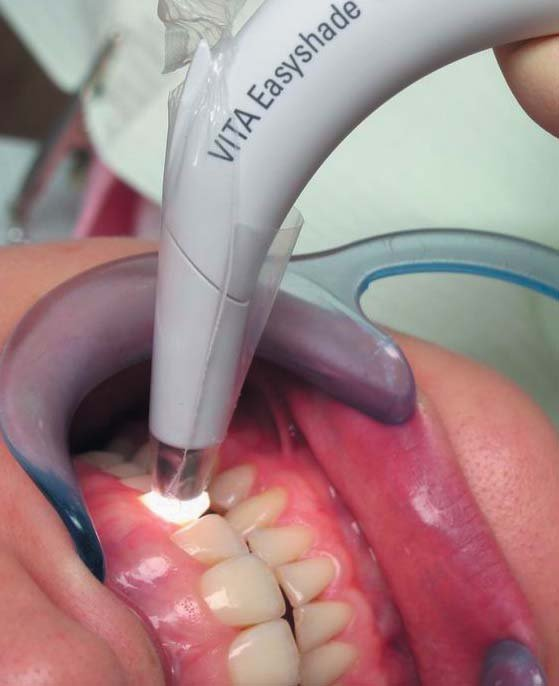
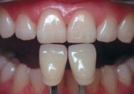
Типи прозорості і яскравості зубів пацієнтів різного віку: висока, середня, низька. Визначення кольору зуба, фотореєстрація за протоколом, спектрофотометрія.
Визначивши цифрове значення за шкалою Vita, можна перейти до наступного етапу – підбору відтінку для кожного топографічного елементу майбутньої реставраційної конструкції. Немає необхідності використовувати велику кількість відтінків матеріалу, оскільки хроматична різниця у невеликому об'ємі напівпрозорих матеріалів невелика і ці кольори дуже близькі між собою, що дозволяє скоротити кількість використовуваних матеріалів і ефективніше їх витрачати. Це взяли до уваги деякі компанії, які скоротили кількість відтінків у наборі матеріалу і запропонували шкалу відповідності, яка співпадає зі шкалою Vita, наприклад як у матеріалі Ceram X One SphereTEC (Dentsply Sirona).
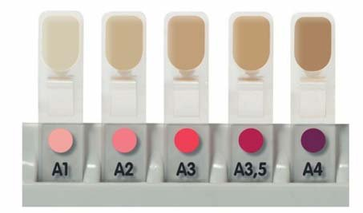
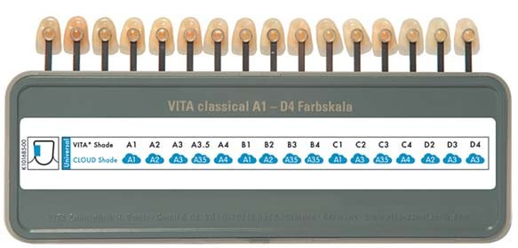
Реставрація передніх зубів передбачає застосування біоміметичної багатошарової концепції відновлення, таким чином слід підібрати матеріал для парапульпарного, плащового дентину, основної емалі і поверхневої емалі. Опаковість цих матеріалів має відповідати опаковості відновлюваної тканини: для парапульпарного дентину це близько 77 одиниць опаковості, для плащового дентину – 50 одиниць, для основної емалі – 40 одиниць і для поверхневої емалі – 30 одиниць. На жаль, поки що немає єдиного матеріалу, який би відповідав цим вимогам опаковості і мав різні характеристики міцності та мануальні властивості в залежності від топографічних рекомендацій. Однак можна об'єднати різні групи матеріалів в одній реставраційній конструкції.
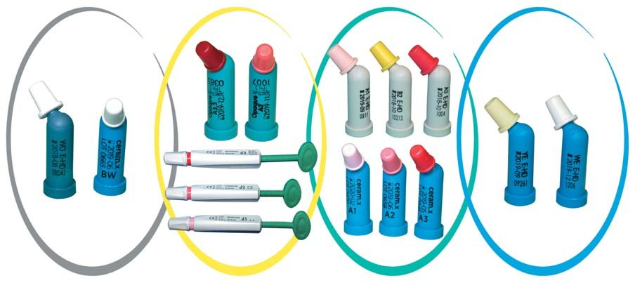
Схема топографії зубних тканин у біоміметичній концепції реставрації: парапульпарний дентин, плащовий дентин, основна емаль, поверхнева емаль. Дентино-емалева межа і шийка зуба – основні орієнтири при побудові реставраційної конструкції.
Варіанти комбінування різних матеріалів для біоміметичної техніки реставрації: парапульпарний дентин – відтінок WO матеріалу Esthet-X HD, Dentsply Sirona, іноді відтінок BW матеріалу Ceram X One SphereTEC; плащовий дентин – опакові відтінки O матеріалу Spectrum TPH, Dentsply Sirona, або дентинні відтінки D Ceram X One Dentin&Enamel, Dentsply Sirona; основна емаль – відтінки Body матеріалу Esthet-X HD або універсальні відтінки матеріалу Ceram X One SphereTEC; поверхнева – емалеві відтінки WE, YE матеріалу Esthet-X HD.
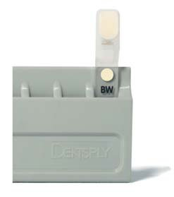
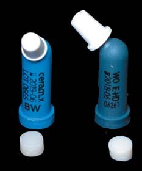
Слід пам'ятати, що опаковість відтінку WO матеріалу Esthet-X HD більша, ніж відтінку BW матеріалу Ceram X One SphereTEC, тому цей матеріал можна застосовувати або поза топографічними межами, наприклад для додання яскравості в конструкціях за типом прямий композитний вінір, або у вітальних зубах ближче до ріжучого краю.
Для імітації плащового дентину ми обрали дентиновий відтінок матеріалу Ceram X One Dentin&Enamel, для основної емалі – універсальний відтінок, який відповідає опаковості основної емалі – Ceram X One SphereTEC, для прозорої емалі – відтінок прозорої емалі Esthet-X HD, парапульпарний дентин можна відновити тільки відтінком WO, поскільки інші світлі відтінки, наприклад такі, як відтінок BW матеріалу Ceram X One SphereTEC, мають недостатню опаковість.
Відтінок обраного матеріалу можна підбирати безпосередньо на відповідній ділянці зуба. На очищену пастою Zirkаtе поверхню було приклеєно невеликий об'єм композиту згідно з топографією. У серединній ділянці центрального різця – об'єм основної емалі, поскільки саме в цій зоні ця тканина не перекрита в зубах середньої прозорості прозорою емаллю, пришийкова зона дентину найменше перекрита основною емаллю на іклі, а ріжучий край передніх зубів задає тон прозорій емалі. Матеріали Dentsply Sirona не вимагають полімеризації при визначенні кольору, бо вони не змінюють відтінок після фотополімеризації.
Остаточний протокол відновлення: плащовий дентин – відтінок D2 матеріалу Ceram X One Dentin&Enamel, основна емаль – відтінок А2 матеріалу Ceram X One SphereTEC, прозора емаль – відтінок YE матеріалу Esthet-X HD.
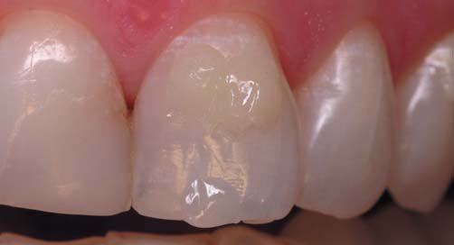
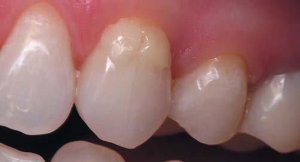
Підбір відтінку матеріалу безпосередньо на зубі: основна і поверхнева емаль на центральному різці, відтінок дентину – на шийці ікла.
Наступний етап – видалення старих пломб, попереднє препарування, створення скосу і згладжування поверхні емалі.
Первинне препарування виконувалося кулястим бором зернистістю 120 мк, скіс – полум'яподібним бором зернистістю 30 мк. У цьому клінічному випадку також потрібно було відпрепарувати емаль у пришийковій зоні проксимальних поверхонь.
Остаточне препарування орієнтоване на дефект, піднебінна поверхня має чіткі межі, препарувалася перпендикулярно до поверхні, на вестибулярній поверхні було створено скошений край, протяжність якого може варіювати в залежності від дефекту. Згладжування поверхні, видалення емалі, що розтріскалася, запобігає появі білої лінії на межі реставрація – зуб внаслідок відриву розколотих емалевих призм.
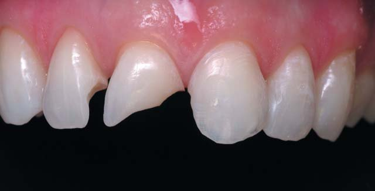
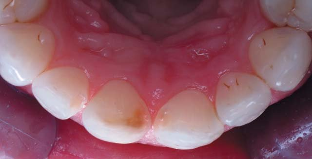
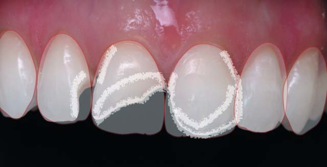
Схема препарування: скіс у межах емалі, препарування емалі у пришийковій зоні проксимальних поверхонь.
Адгезивні техніки відновлення завжди вимагають ізоляції системою рабердам. Перевага надається техніці тотального протравлювання – емаль протравлюємо з динамічною активацією пензликом протягом 30 с, дентин – протягом 15 с. Вибір адгезиву зумовлений вітальністю зубів, для профілактики виникнення післяопераційної чутливості ліпше використовувати адгезивні системи, які містять спирт. Більш кисла система для всіх технік протравлювання (самопротравлювання, тотального чи селективного) сприяє ліпшому вклеюванню композиту з великим вмістом нанонаповнювача. Не секрет, що нанонаповнені композити складніше склеюються з поверхнею дентину та емалі і вимагають тривалішої адаптації і притирання. Використання нового кислішого адгезиву Prime&Bond One Select вирішує цю проблему.
Експозиція адгезиву без втирання при тотальному протравлюванні – 20 с. Слід ретельно видаляти розчинник. У цього адгезиву більший вміст наповнювача, велика питома в'язкість, тому шар щільніший – роздмухуємо адгезив легким повітряним струменем протягом 10 с до повної стабілізації адгезивної плівки.
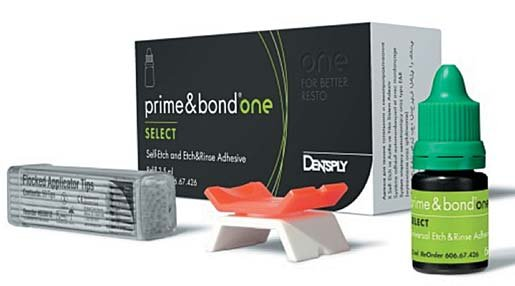
У передніх зубах немає необхідності стабілізувати плівку адгезиву текучим композитом, оскільки обсяг і профіль порожнин дозволяє перекрити їх відразу матеріалом для імітації дентинного об'єму, який легко вклеюється, а С-фактор порожнин невисокий.
Відновлення виконується крок за кроком, починаючи від краю до центру. Пошарове відновлення згідно з біоміметичною концепцією передбачає аналіз топографії, зокрема розташування дентино-емалевої межі. Основні принципи побудови однакові для всіх зубів. Побудова починається із серединних шарів, зазвичай обсягу дентину, які закладають положення зуба по дузі, потім пошарово відновлюється піднебінна і вестибулярна стінки.
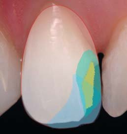
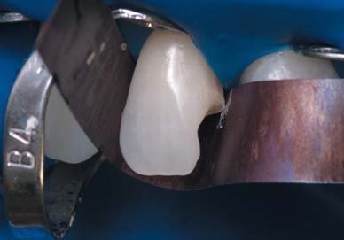
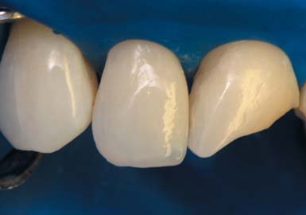
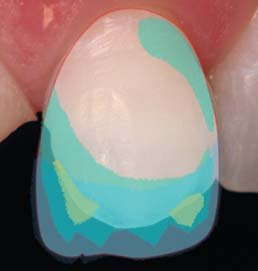
Реставрація зуба 12. Багатошарова реставрація.
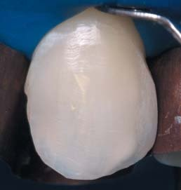
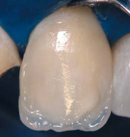
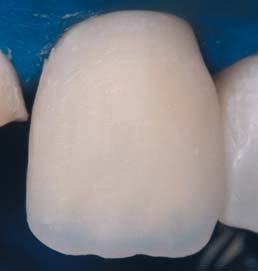
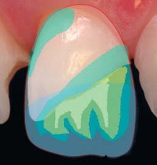
Реставрація зуба 21. Багатошарова реставрація.
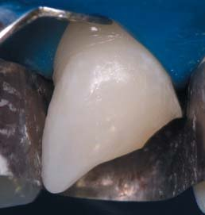
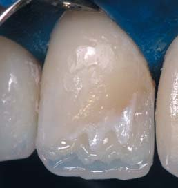
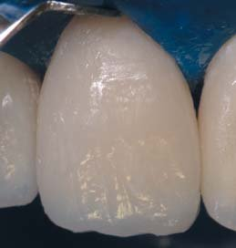
Реставрація зуба 11. Багатошарова реставрація.
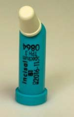
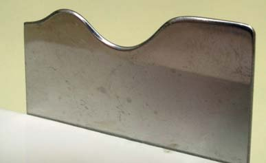
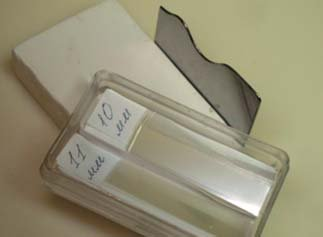
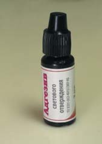
Інструменти і матеріали для побудови контактних поверхонь: відтінок В1 inc матеріалу Spectrum TPH, Dentsply Sirona, лавсанові матриці шириною 10-11 мм, смола, для відновлення «липкого» шару – адгезив із двопляшкової адгезивної системи матеріалу Призмафіл, Стомадент.
Окремим етапом були відновлені контактні поверхні. Для цього використовувалися попередньо відконтурована на спеціальному пристосуванні «Хвиля» та лавсанова матриця. Опуклість на матриці розташовується по центру лавсанової смужки для побудови дистальної поверхні і ближче до краю при контуруванні смужки для медіальної поверхні. Матеріал для побудови контакту повинен бути достатньо пластичним і не дуже міцним, що дозволить легко прибрати надлишки у пришийковій зоні, на вестибулярній і піднебінній поверхнях. Слід пам'ятати, що помилка при побудові зуба в основі може призвести до неправильного формування контакту, поскільки кривизна задається ще на етапі формування зеніту зуба. Така техніка створення контактної точки дозволяє запечатати шов між вестибулярною та оральною стінками реставраційної конструкції.
При фінішній обробці реставрації слід підкреслити створений або посилити макро- і мікрорельєф коронки: відпрацювати симетричність форми зубів, розмір коронок, амбразури, кути повороту коронки.
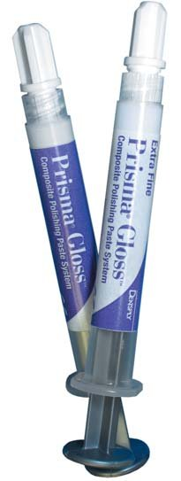
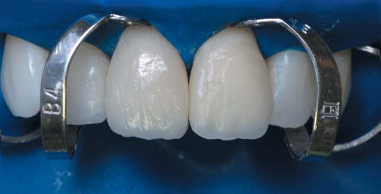
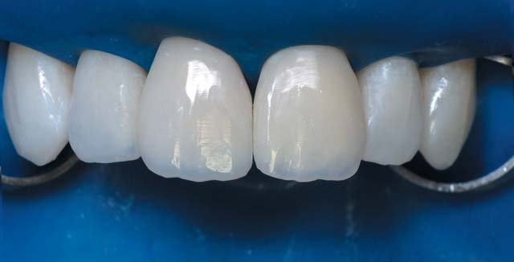
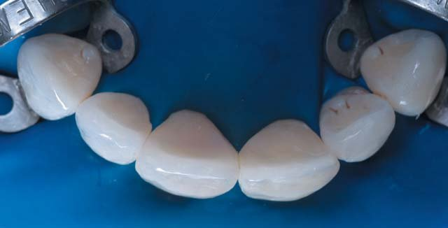
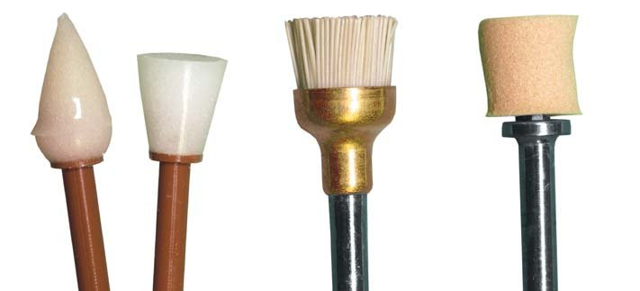
Матеріали та інструменти для шліфування і полірування: пасти PrismaGloss Regular і PrismaGloss ExtraFine, Dentsply Sirona, зворотноконусна і конусна форми Enhance, Dentsply Sirona, щітка Occlubrash, Kerr, полірувальні чашки Enhance® Polishing Cups для використання з полірувальною пастою Prisma® Gloss™ Polishing Paste + металевий тримач, Dentsply Sirona.
На цьому етапі ми вирішуємо ряд завдань. Забезпечуємо плавний перехід на межі реставрація – зуб, що поліпшує крайове прилягання та естетику реставрації. Видаляємо з поверхні реставрації дисперсний, інгібований киснем шар, що запобігає забарвлюванню поверхні пломби. Гладенька, блискуча поверхня дозволяє краще імітувати оптичні властивості твердих тканин зуба, запобігає ретенції зубного нальоту.
Контурування поверхні виконувалося полум'яподібним бором (жовте маркування) зернистістю 30 мк. На цьому етапі знімалися надлишки матеріалу, формувалися вертикальні компоненти – валики, мамелони, індивідуальні борозни, підкреслювалися повороти на проксимальні поверхні, пришийковим бором було ретельно оброблено перехід у пришийковій зоні по межі зуб – реставрація. При конструюванні можна зробити розмітку поверхні олівцем, що дозволить контролювати симетричність рельєфу. Далі поверхня згладжувалася конусною і зворотноконусною формою Enhanse на невеликих швидкостях обертання – 3800-4600 об/хв з водним зрошенням. Остаточно зуби полірувалися пастами PrismaGloss Regular та Extra Fine. Проксимальні контакти ретельно полірувалися Суперфлос ОралБі з цими ж пастами.
Зверніть увагу, який блиск поверхні можна отримати з інноваційним матеріалом Ceram X SphereTEC – різний діаметр сфер попередньо співполімеризованих субмікронних частинок не лише надає ідеальні мануальні властивості цьому матеріалу, велику пластичність, але й зберігає поліровану поверхню на тривалий період експлуатації реставрації.
Також слід перевіряти, чи має використовуваний матеріал флуоресценцію, подібну до тієї, яку мають зубні тканини. Усі матеріали Dentsply Sirona мають флуоресценцію, подібну до флуоресценції зубних тканин.
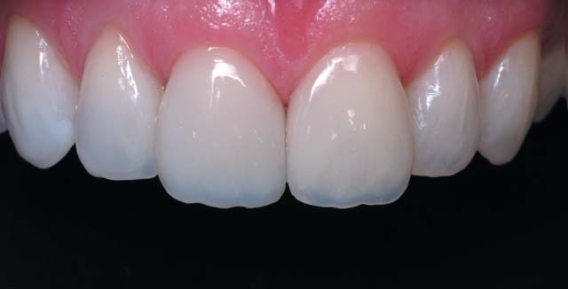
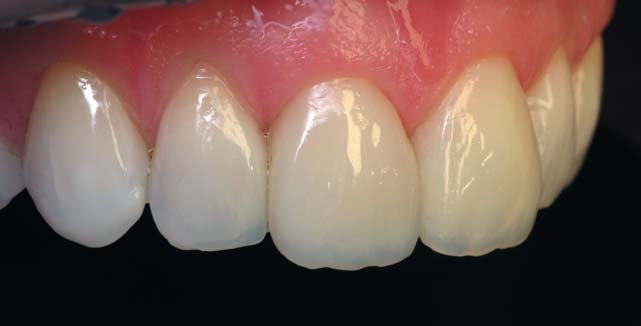
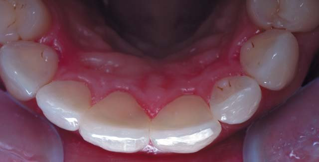
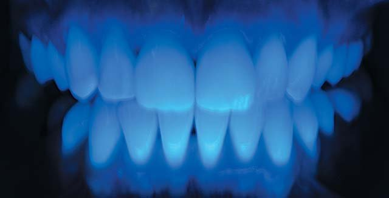
Висновки
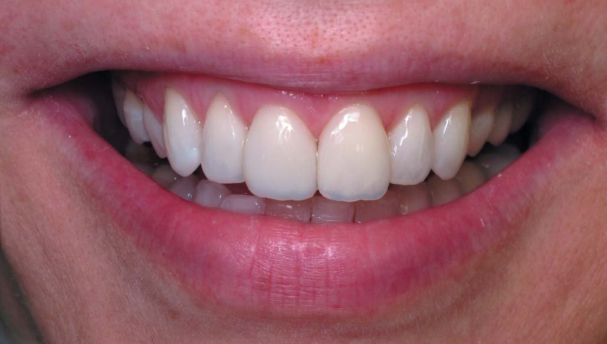
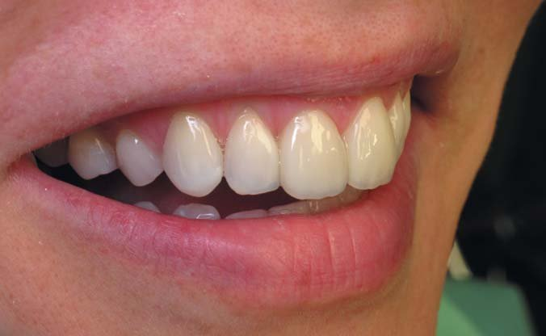
Заміну старої реставрації у прямій техніці композитом можна робити якомога раніше. Така техніка завжди буде менш інвазивна і дозволяє при мінімальному втручанні усунути супутні дефекти положення зубів, ясен, абфракційні дефекти і стертість ріжучого краю. Пряма техніка відновлення вимагає досить високої майстерності оператора і завжди індивідуальна, однак цьому можна навчитися. При відновленні естетики усмішки слід робити комплексне, узгоджене з пацієнтом планування майбутніх реставраційних рішень. Інноваційні композити та адгезивні системи, які з'являються, все зручніші у застосуванні. Більш кислі адгезивні системи поліпшують з'єднання нанонаповнених композитів з емаллю та дентином, а завдяки зниженню вмісту смоли нанонаповнені композити мають поліпшені мануальні властивості, стійкіші до розтріскування і дозволяють створити більш тривкий блиск поверхні.
Література
- Горди Манаута, Анна Салат. Слои. – М.: Азбука, 2014.
- Dietschi D. Freehand composite resin restorations: A key to anterior esthetics. Pract Periodontics Aesthet Dent 1995;7: 15-25.
- Радлинский C.B. Пломба, реставрация, художественная реставрация. – ДентАрт. – 2004. – № 3.
- Dietschi D, Ardu S, Krejci I. A new shading concept based on natural tooth color applied to direct composite restorations. Quintessence Int. 2006.
- Радлинский C.B. Биомиметические направление в реставрации зубов. – М.: Маэстро, 2002.
- Радлинский C.B. Реставрация контактных поверхностей верхних передних зубов. – ДентАрт. – 2008. – №1.
- Радлинский C.B. Реставрация передних зубов. – ДентАрт. – 1998. – № 3.
- Радлинский C.B. Управление прозрачностью реставрационных конструкций. – ДентАрт. – 1997. – №4.
- Радлинский C.B. Финишная отделка реставраций. – ДентАрт. – 1998. – №4.